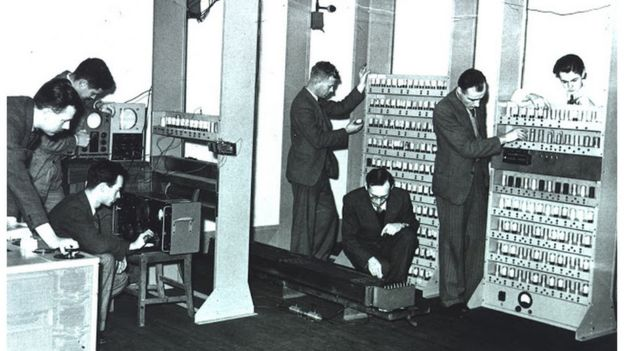

As far as disciplines go; computer sceince is fairly new, only being established as a degree subject in 1953 at the University of Cambridge.
However, it wouldn't be for another 16 years until the United States recieved its first computing-related degree program, which was offered out by the
'Information Science Centre' in Illinois under the course name 'Information Science'.
regardless of this, though; computer science is now considered to be one of the most popular subjects in the world - ranking as number 1 amongst the most viewed university courses according to
Top Universities.